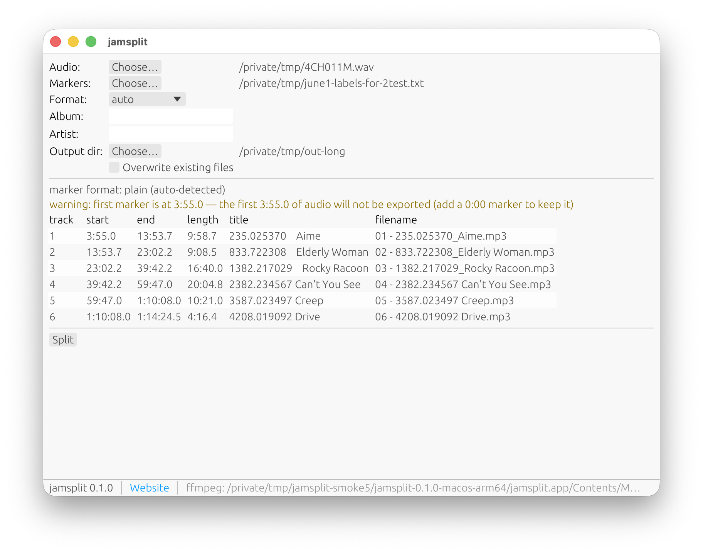

How It Works
1. Record
Record the session as one long audio file. WAV from a Zoom recorder is typical, but MP3 or anything else ffmpeg can read works.
2. Mark the song starts
In Audacity, REAPER, or a plain text file, put a marker where each song begins. The next marker ends the current song.
3. Split
jamsplit exports numbered MP3s like 01 - Opening Jam.mp3.
ffmpeg is built into the download, so there is nothing else to install.
Make Markers
Add a 0:00 marker if the first song starts at the beginning of the recording.
Audacity
- Open the long recording in Audacity.
- Click the start of a song.
- Use Edit > Labels > Add Label at Selection, or press Ctrl+B.
- Type the song title.
- Repeat for every song start.
- Use File > Export Other > Export Labels.
Use the exported .txt file as the jamsplit marker file.
REAPER
- Set the project time display to minutes and seconds.
- Add a marker at each song start, or create one region per song.
- Name each marker or region with the song title.
- Open View > Region/Marker Manager.
- Export the markers or regions to a
.csvfile.
jamsplit uses marker or region starts. Region ends are ignored.
Plain Text
Make a text file with one start time and title per line.
0:00 Opening Jam
05:23 - Slow Blues
1:02:11 CloserAccepted times include M:SS, H:MM:SS, and raw seconds.
Use The App
- Extract the download. On macOS, open jamsplit.app — right-click and choose Open the first time. On Windows and Linux, run jamsplit-gui.
- Choose the audio file. WAV from a Zoom recorder is the normal case, but anything ffprobe can read is accepted.
- Choose the marker file from Audacity, REAPER, or your plain text list.
- Leave the format on auto unless you need to force audacity, reaper, or plain.
- Optional: fill in album and artist tags, and choose an output folder.
- Check the preview table. If it looks right, click Split.
Output files are numbered in marker order: 01 - Song Title.mp3, 02 - Song Title.mp3, and so on. jamsplit also writes a jamsplit-summary.json file in the output folder. Existing MP3s are not overwritten unless you choose that option.
If the app reports ffmpeg is missing, use Locate ffmpeg... to point at an ffmpeg install. ffprobe needs to be next to it.
CLI Option
You do not need the command line for normal use, but it is available.
jamsplit inspect --audio jam.wav --markers songs.txt
jamsplit split --audio jam.wav --markers songs.txt --album "Practice 2026-06-05"